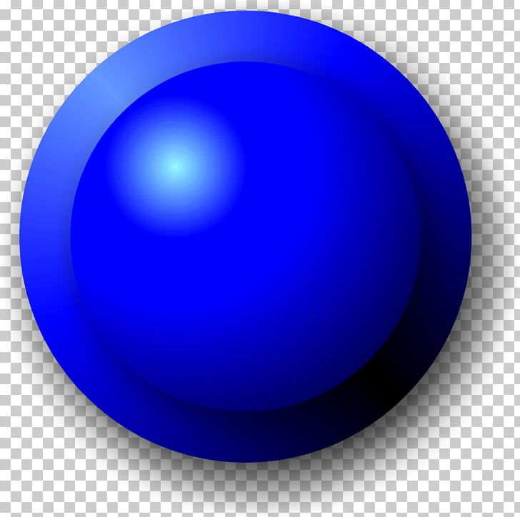
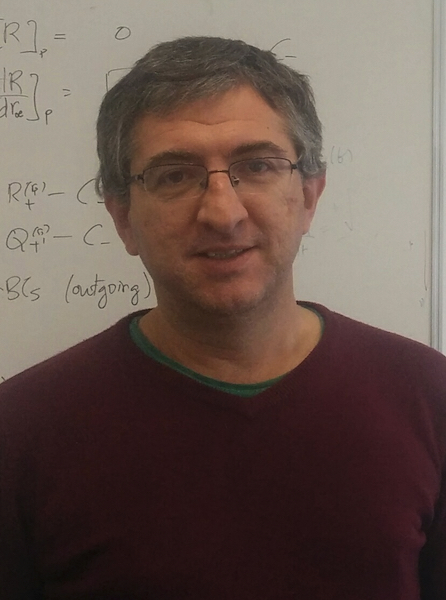
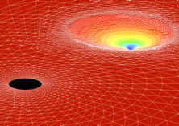
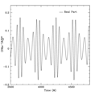
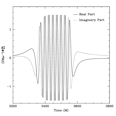

ADDRESS: Institute of Space Sciences (ICE, CSIC & IEEC), Campus UAB, Carrer de Can Magrans s/n, 08193 Bellaterra, Barcelona, Spain.
PHONE: +34 93 737 9788 (ext. 933021)
E-MAIL: CSIC
SKYPE: carlosfsopuerta
17.June.2025:Construction of LISA begins; primer contractor selected
4.May.2025:Article in Spanish about LISA in The Conversation 25.January.2024:LISA Mission is adopted by ESA and enters the implementation phase! 19-20.October.2020:Iberian Gravitational Wave Meeting Online 4-6.September.2018:Astro-GR@Barcelona 2018
2-6.July.2018: 2nd ICE Summer School on Gravitational Wave Astronomy
5.February.2018:LISA Pathfinder opens the door to LISA!!
24.January.2018:LISA Pathfinder wins American Astronautical Society award
16-20.October.2017:Astro-GR@Barcelona 2017
30.June.2017:Farewell LISA Pathfinder
20.June.2017:LISA Mission selected by ESA for the L3 slot!
16.October.2016:L3 mission Call
7.October.2016:LISA Pathfinder Archive is Online
7.June.2016:LISA Pathfinder Initial Results
11.February.2016:Annoucement of First detection of Gravitational Waves: MIT Caltech
3.December.2015:LISA Pathfinder Launch!!!
15.September.2015:First observation of Gravitational Waves!!
12-14.May.2015:5th Iberian Gravitational Wave Meeting in Barcelona
22-24.April.2014:Sant Cugat Forum on Gravitational Wave Astrophysics
28.November.2013:The Gravitational Universe selected as the L3 mission science theme
8-13.September.2013:Spanish-Portuguese Relativity Meeting in Benasque
15-17.February.2012:2nd Iberian Gravitational Wave Meeting in Barcelona
7-11.September.2009:LISA Astro-GR@Barcelona
16-20.June.2008:7th International LISA Symposium in Barcelona
Hello! I am a researcher working at the Institute of Space Sciences (ICE, CSIC & IEEC) since September 2007 (when I started as a Ramón y Cajal Fellow). I am currently a Tenured Scientific Researcher (Investigador Científico). My main research interests are in the area of Gravitational Physics with focus in the new area of Gravitational Wave Astronomy. I am very interested in the science of the future Laser Interferometer Space Antenna (LISA), an ESA-led mission that will detect gravitational radiation from low-frequency sources like massive black hole mergers, inspiraling stellar compact objects into massive black holes, ultra-compact galactic binaries, etc. LISA is currently in the implementation phase with launch expected in 2035. If you are interested in LISA Science join the LISA Consortium.
Gravitational Wave Astronomy was born in September 14th, 2015 after the first detection of gravitational waves, from a colliding black hole binary, by the Laser Interferometer Gravitational-wave Observatory (LIGO). Together with Virgo and KAGRA they are observing many compact binary systems with black holes and neutron stars. On the other hand, other projects are trying to open other gravitational-wave windows: Pulsar Timing Arrays, CMB polatization detectors, etc. New revolutionary discoveries in Astrophysics, Cosmology, and Fundamental Physics are around the corner. It is now a great time to get involved in Gravitational Wave research!
In Spain, Gravitational Wave Astronomy is growing and more and more institutes and reseach groups are devoting attention to it. There is a collaborative network, REDONGRA (Spanish Network of Gravitational Wave Physics), which involves the different Spanish research groups advancing all the aspects of Gravitational Wave Astronomy: Theory, data analysis, detector technology, simulations, etc. If you would like to be updated about the activities of the network please subscribe to the REDONGRA mailing list HERE.
Selected Publications
 I. Martin Vilchez, C.F. Sopuerta (2025): Efficient Massive Black Hole Binary parameter estimation for LISA using Sequential Neural Likelihood, Journal of Cosmology and Astroparticle Physics, Volume 2025, JCAP04(2025)022. JCAP LINK arXiv LINK
M. Colpi, K. Danzmann, M. Hewitson, K. Holley-Bockelmann, P. Jetzer, G. Nelemans, A. Petiteau, D. Shoemaker, C.F. Sopuerta et al [111 authors; LISA Science Study Team; LISA ESA Project; and other contributors] (2024): LISA Definition Study Report (Red Book), ESA LINK arXiv LINK
M. Lenzi, C.F. Sopuerta (2023): Black Hole Greybody Factors from Korteweg-de Vries Integrals: Theory, Physical Review D, Volume 107, page 044010. PRD LINK arXiv LINK
K.G. Arun et al [LISA Consortium WG for Fundamental Physics; 141 authors] (2023): New Horizons for Fundamental Physics with LISA, Living Reviews in Relativity, Volume 25, 4. LRR LINK arXiv LINK
M. Lenzi, C.F. Sopuerta (2021): Darboux Covariance: A Hidden Symmetry of Perturbed Schwarzschild Black Holes, Physical Review D, Volume 104, page 124068. PRD LINK arXiv LINK
M. Armano et al [LPF Collaboration; 88 authors] (2021): Sensor Noise in LISA Pathfinder: In-Flight Performance of the Optical Test Mass Readout, Physical Review Letters, Volume 126, page 131103. PRL LINK
M. Oltean, R.J. Epp, C.F. Sopuerta, A.D.A.M. Spallicci, R.B. Mann (2020): Motion of localized sources in general relativity: Gravitational self-force from quasilocal conservation laws, Physical Review D, Volume 101, page 064060. PRD LINK arXiv LINK
M. Armano et al [LPF Collaboration; 78 authors] (2018): Enabling LISA science at the lowest frequency: Femto-g free-fall at 20 micro-Hz demonstrated by LISA Pathfinder, Physical Review Letters, Volume 120, page 061101. PRL LINK
M. Attems, J. Casalderrey-Solana, D. Mateos, D. Santos-Oliván, C.F. Sopuerta, M. Triana, and M. Zilhao (2017): Paths to equilibrium in non-conformal collisions, Journal of High Energy Physics, Volume 06(2017), page 154. JHEP LINK arXiv LINK
S. Babak, J. Gair, A. Sesana, E. Barausse, C.F. Sopuerta, C.P.L. Berry, E. Berti, P. Amaro-Seoane, A. Petiteau, and A. Klein (2017): Science with the space-based interferometer LISA. V. Extreme mass-ratio inspirals, Physical Review D, Volume 95, page 103012. PRD LINK arXiv LINK
M. Armano et al [LPF Collaboration; 119 authors] (2016): Sub-Femto-g Free Fall for Space-Based Gravitational Wave Observatories: LISA Pathfinder Results, Physical Review Letters, Volume 116, page 231101. PRL LINK
D. Santos-Oliván and C.F. Sopuerta (2016): New Features of Gravitational Collapse in Anti-de Sitter Spacetimes, Physical Review Letters, Volume 116, page 041101. PRL LINK arXiv LINK
D. Aguilera et al [STE-QUEST Collaboration; 66 authors] (2014): STE-QUEST - Test of the Universality of Free Fall Using Cold Atom Interferometry, Classical and Quantum Gravity, Volume 31, page 115010. CQG LINK arXiv LINK
P. Amaro-Seoane, C.F. Sopuerta, and M.D. Freitag (2013): The role of the supermassive black hole spin in the estimation of the EMRI event rate, Monthly Notices of the Royal Astronomical Society, Volume 429, pages 3155--3165. MNRAS LINK arXiv LINK
P. Cañizares, C.F. Sopuerta, and J.L. Jaramillo (2010): Pseudospectral Collocation Methods for the Computation of the Self-Force on a Charged Particle: Generic Orbits around a Schwarzschild Black Hole, Physical Review D, Volume 82, page 044023. PRD LINK arXiv LINK
C.F. Sopuerta and N. Yunes (2009): Extreme and Intermediate-Mass Ratio Inspirals in Dynamical Chern-Simons Modified Gravity, Physical Review D, Volume 80, page 064006. PRD LINK arXiv LINK


Welcome to Carlos F. Sopuerta's Website!


